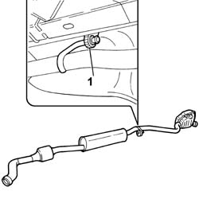
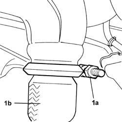
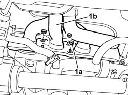

1072C10 EXHAUST MANIFOLD - R + R AND REPLACE SEAL
- Path
- Procedures > 10 ENGINE > 1072 INLET AND EXHAUST MANIFOLDS > 1072C EXHAUST MANIFOLDS > 1072C10 EXHAUST MANIFOLD - R + R AND REPLACE SEAL
- Kind
- repair procedure (removal / refitting; the operation number is the code)
- Applies to
- engines: 2.0 16v; all production periods
- Interactive page
- https://sloeber94.github.io/elrnDB-fUlss/en/#/179007081
Applies to: engines: 2.0 16v; all production periods
 Removing
Removing
 Refitting
RefittingOp. 7055B54 UNDER-ENGINE GUARD - R R
- Remove the power steering box heat shield.
1. Release the exhaust system flexible mounting.

Applies to: engines: 2.0 16v; all production periods
1. Working in the area of the front axle, undo the fixing bolt (1a) and separate the exhaust pipe (1b) from the exhaust manifold and move it aside.

Applies to: engines: 2.0 16v; all production periods
1. Undo the fixing nuts (1a) and remove the intake manifold (1b).

Applies to: engines: 2.0 16v; all production periods
Refitting
Removing- Replace the gasket with a one of the same type .
- Fit the exhaust manifold and tighten the nuts to torque.
 | Value - daNm | Fastening | Component | Ø |
|---|---|---|---|---|
. | 3,5 | Nut | EXHAUST MANIFOLD/S | - |
- Tighten the exhaust pipe and restore the fastening.
- Fit the exhaust system flexible mounting.
- Place the power steering heat shield removed previously in position.